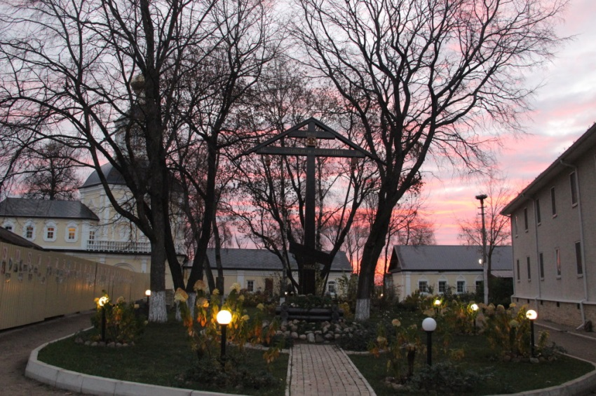
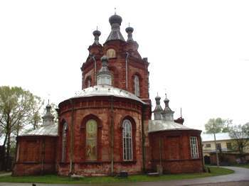
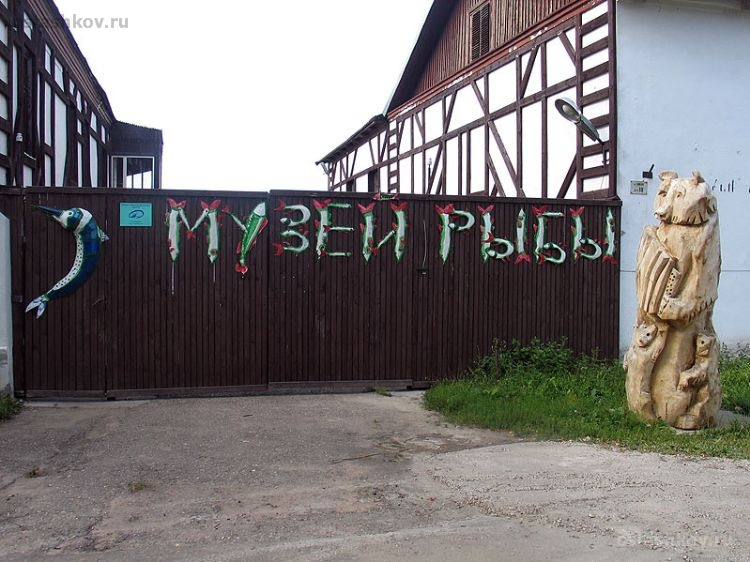
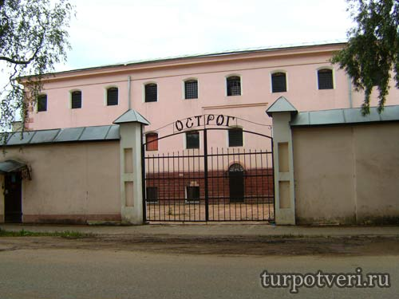
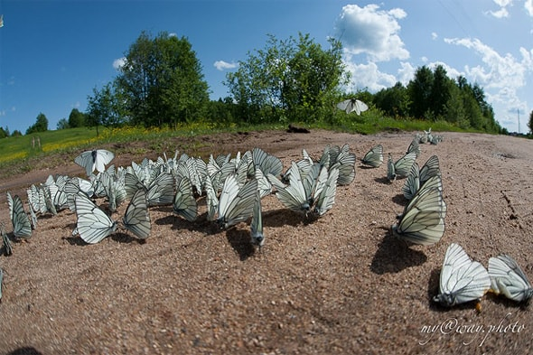
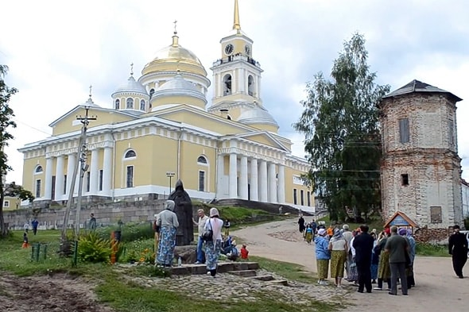

Осташков
1. Богородицкий женский монастырь
Осташковский Житенный монастырь находится на одном из островов озера Селигер, называемом Житенным. До 1700 года на этом острове находились житницы для хлебных запасов, собиравшихся Управлением Патриаршего двора с жителей смежного острова Клично, впоследствии основавших город Осташков. С городом остров соединен насыпным валом.
Основание монастырю положено в начале XVIII столетия, по указу Петра 1-го от 19 марта 1716 года. Причина - спор из-за обладания Чудотворной иконой Смоленской Божией Матери Одигитрии. В древности икона стояла на воротах городской стены и после пожара, бывшего в 1711 году и все истребившего, была найдена в пепле совершенно невредимой. Для устранения соперничества церквей и построена была на Житном острове деревянно-брусяная церковь, в которой и поставлена была как храмовая икона Божией Матери Одигитрии.
В 1734 году началось строительство каменной церквиВ 1751 году над западным входом в церковь сооружена каменная колокольня в три яруса и поставлен на ней железный позолоченный крест. Закрытая в начале ХХ века, разоренная и разрушенная , обитель возродилась в День Памяти Царственных страстотерпцев 17 июля 2002 года.
В настоящее время благоустроена территория монастыря, восстановлены надвратный комплекс, архиерейский корпус, два братских корпуса, хозяйственные постройки: столярная мастерская, пасека, скотный двор, огород, пекарня, швейная мастерская; цветочное хозяйство обеспечивает горожан семенами и саженцами.
2. Знаменский монастырь
Знаменский монастырь расположен в Осташкове, в Рабочем городке. Обитель была основана на пустыре Старое Струговище в 1673 году, на берегу Селигера. Очень скоро монастырь стал расширять свои владения. В 1692 году в обители заложили новую деревянная церковь, а в середине 18 века велось активное каменное строительство.
Во время большого городского пожара 1868 года монастырь полностью сгорел.
Монастырь восстановили в камне: построили корпуса для сестер, гостиницу за оградой, просфорню с помещением для живописной, больницу, прачечную; в монастырь из озера была проведена вода. Открылось училище для бедных девиц.
В 1928 году монастырь закрыли. Здесь был образован «рабочий городок», а позднее была открыта швейная фабрика. В зимней части храма расположился склад зерна. Находящиеся здесь мощи преподобного Нила Столбенского долгое время находились в забвении, потом их переместили в летнюю часть храма, где развернулась экспозиция краеведческого музея.
30 марта 1947 года, по ходатайству верующих, для богослужений была открыта зимняя часть храма. После того, как храм был передан верующим, он был отремонтирован и заново расписан, сейчас это действующий приходской храм. От прежнего монастыря осталась ограда (1760 год), трапезный корпус (1840-е годы), настоятельский корпус (18 век), кельи и гостиница (19 век).
Ансамбль Знаменского монастыря прекрасно виден с озера и определяет архитектурный силуэта города.
3. Музей рыбы
Музей рыбы в Осташкове открылся 30 июля 2006 года. Это не просто собрание экспонатов. Это собрание историй, традиций, обычаев и поверий. Здесь можно узнать какую, как и когда ловить рыбу, как отличить один ее вид от другого, как правильно разделать и приготовить. Расскажут работники музея рыбы и о легендарных рыбаках селигерского края и об особенностях здешней знатной рыбалки, о которой известно далеко за пределами не только Тверской области, но и России. И, кроме того, посетителей музейных залов посвятят в тайны подводного мира озера Селигер.
Здесь представлены керамические изделия, сувениры с изображением рыб, снасти, сети, удочки и многое другое.
4. Музей «Острог»
Здание музея раньше было деревянным (ХVII век), затем вместо деревянного здания построили каменное. До 1917 года в «Остроге» действовала городская тюрьма. В советское время в здании находилась исправительная колония, которая в 1990 -х годах перестала существовать. В 2008 году здание было отреставрировано и превратилось в историко-мемориальный комплекс. Для посетителей «Острога» действуют следующие экспозиции: знакомство с историей возникновения и существования «Острога»; знакомство с предметами быта заключенных; знакомство с запрещенными предметами (крестики, кольца и т. д., изъятые у заключенных); Также воссозданы камеры содержания заключенных, штрафной изолятор.Можно посмотреть камеру, где происходили расстрелы заключенных. В музее воссоздана обстановка того времени, когда здесь отбывали наказание заключенные.
5. Нило – Столобенская пустынь
 Первые более-менее достоверные сведения о Ниле Столобенском относятся к 1515 году, когда он принял постриг. Надев монашескую рясу, стал жить отшельником, общаясь только с Господом Богом. Однажды во сне иноку послышался глас свыше, что повелел отправиться Нилу жить на остров Столобный, (или Столбный). В 1528 году, когда на нем поселился удивительный монах-отшельник, остров был покрыт густым лесом и совсем безлюден. По имени острова стали называть инока Нил Столобенский. К подвижнику стали стекаться люди. Когда ноги его совсем уже не держали, обессилевший праведник опирался на деревянные костыли, вбитые в стену. Спал — таким же образом. Прошло 27 лет его жизни на Столобном, необыкновенный монах состарился. А когда пришел его час, то уснувшего вечным сном святого нашли бессильно повисшим на подпорках.
На месте кельи преподобного в конце XVI века возник монастырь, названный Ниловой Пустынью.
По Селигеру проходит один из значимых торговых путей того времени, новая обитель Нилова Пустынь на острове Столобный занимает исключительно выгодное в экономическом отношении место. К концу XIX века монастырь стал целым островным городом. В нем все из камня — пять церквей и 25 прочих построек - творения русского архитектора петербуржца Иосифа Шарлеманя, уроженца Лозанны Анжело Ботани и зодчих из Твери. Архитек. В строительство монастыря внес свой вклад Иван Львов.
Сердце ансамбля Нило-Столобенской пустыни – Богоявленский собор с белыми колоннами, портиками, шестью куполами и колокольней. Купола собора были крыты медными листами, вызолоченными с помощью нагревания нанесенной на них амальгамы. Амальгама — смесь золота и ртути. Золочение ею — способ старинный и небезопасный. Мастера-позолотчики за свою работу получали большие деньги, да только вот жили недолго – гибли от отравления ртутью.
Революция в начале XX века принесла обители неисчислимые бедствия: святые мощи были вскрыты, монастырь Нила Столобенского новая власть закрыла, судьбы иноков, обитавших в нем, закончились печально, в большинстве своем они сгинули в сталинских лагерях.
С 1927—1939 год здесь находилась детская колония правонарушителей. Говорят, что мальчишек наказывали, заставляя стесывать с верхней части стен и подкупольного пространства фрески с изображениями святых.
В 1939—1940 годах в бывшем монастыре оказались интернированные польские офицеры. Эта трагическая тайна острова Столобный была раскрыта в девяностых годах прошлого столетия. Более 6 тысяч поляков отсюда были отправлены в подвалы НКВД в Калинине, расстреляны и захоронены под селом Медным. Об этой печальной странице истории напоминает католический крест и мемориальные доски, что установлены у въезда в обитель.
Во время войны здесь помещался госпиталь, после войны снова бы лагерь, но уже для наших сограждан, что побывали в фашистском плену.
В шестидесятые годы практически все постройки бывшего монастыря пришли в аварийное состояние и тогда тут устроили дом для инвалидов. Потом было решение устроить здесь турбазу, и в 70-х годах начали делать соответствующие работы, от которых было больше вреда, чем пользы. А в 90-м году передали церкви и началась на острове Столбный вновь монашеская жизнь…